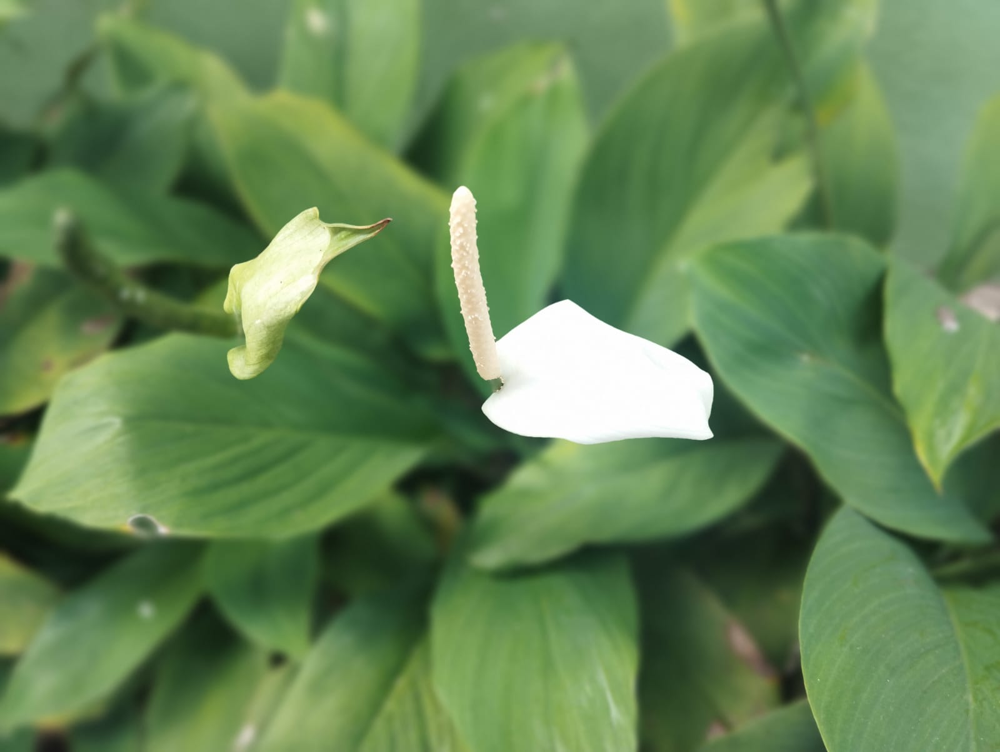
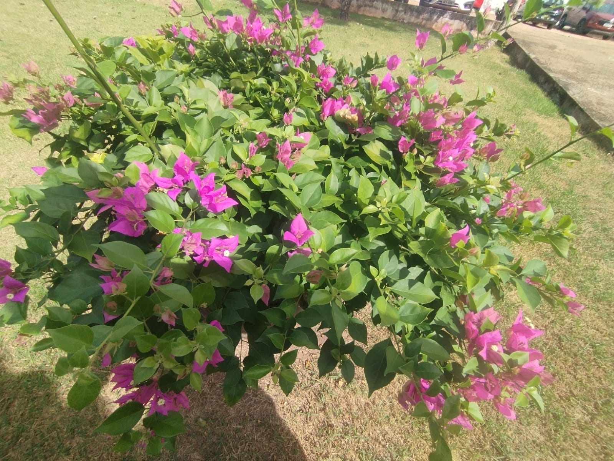
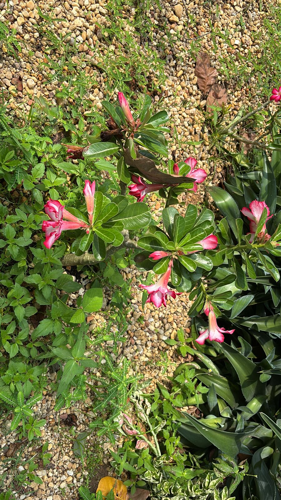
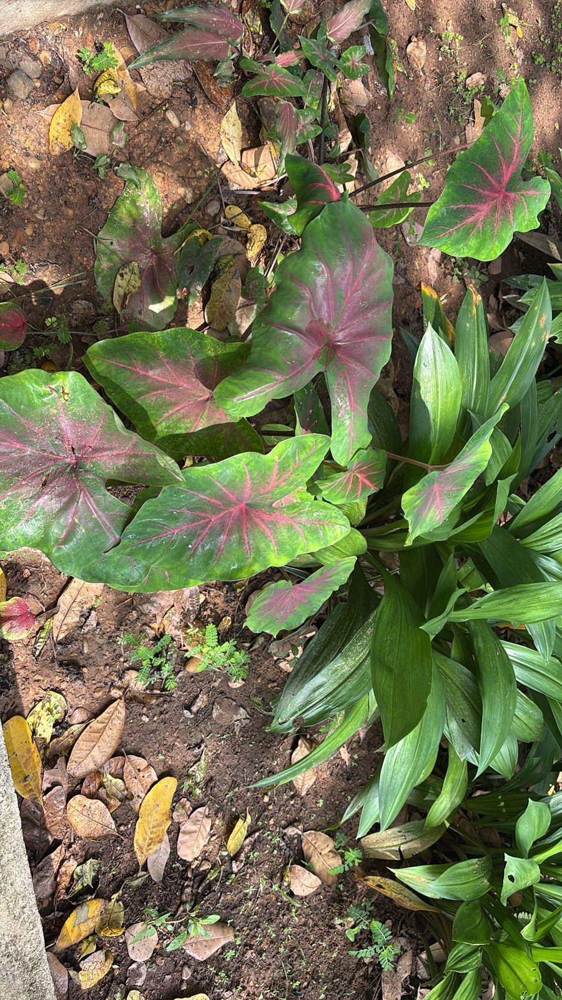

JARDIM DO CAMPUS
Campus garden
Nos jardins contemplamos a beleza e o cheiro das flores. Suas cores vibrantes encantam e inspiram os alunos a florescer em seu aprendizado.
In gardens we contemplate the beauty and smell of flowers. Their vibrant colors enchant and inspire students to flourish in their learning.



